Seventh International Workshop on SCIentific DOCument Analysis
(SCIDOCA 2023)
associated with JSAI-isAI 2023
Workshop: June 5 - 6, 2023
Workshop photos
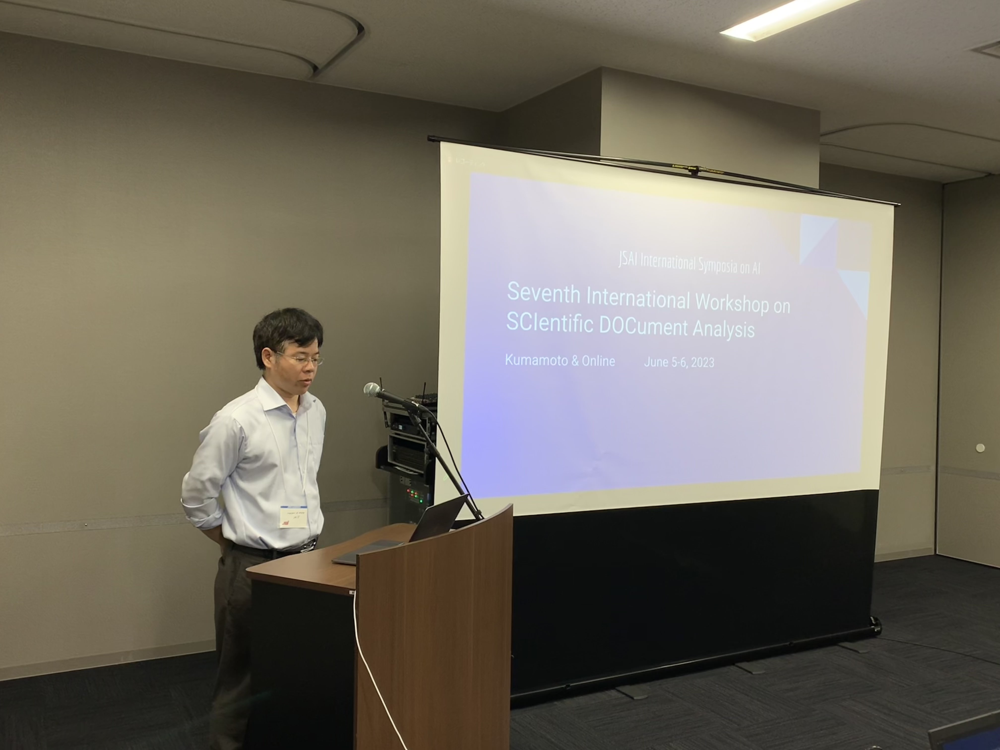
Prof. Nguyen opens the workshop
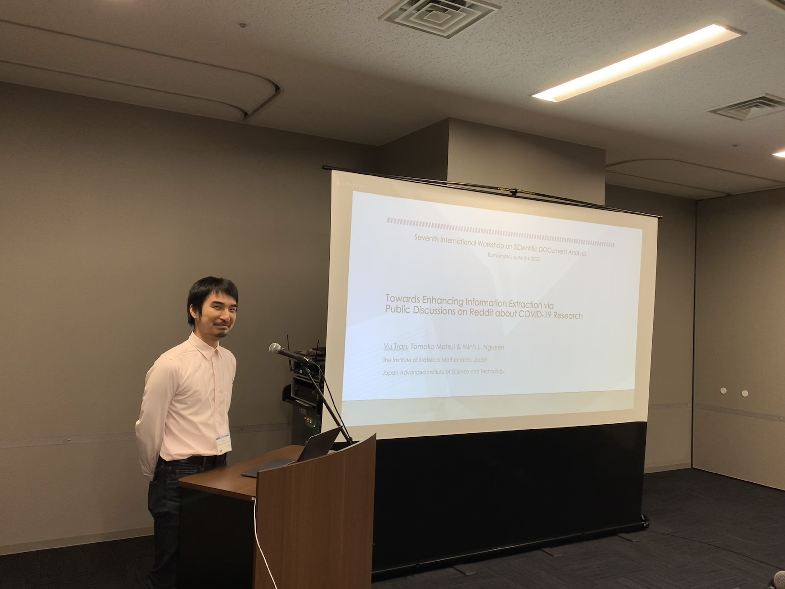
Dr. Vu Tran: Towards Enhancing Information Extraction via Public Discussions on Reddit about COVID-19
Research
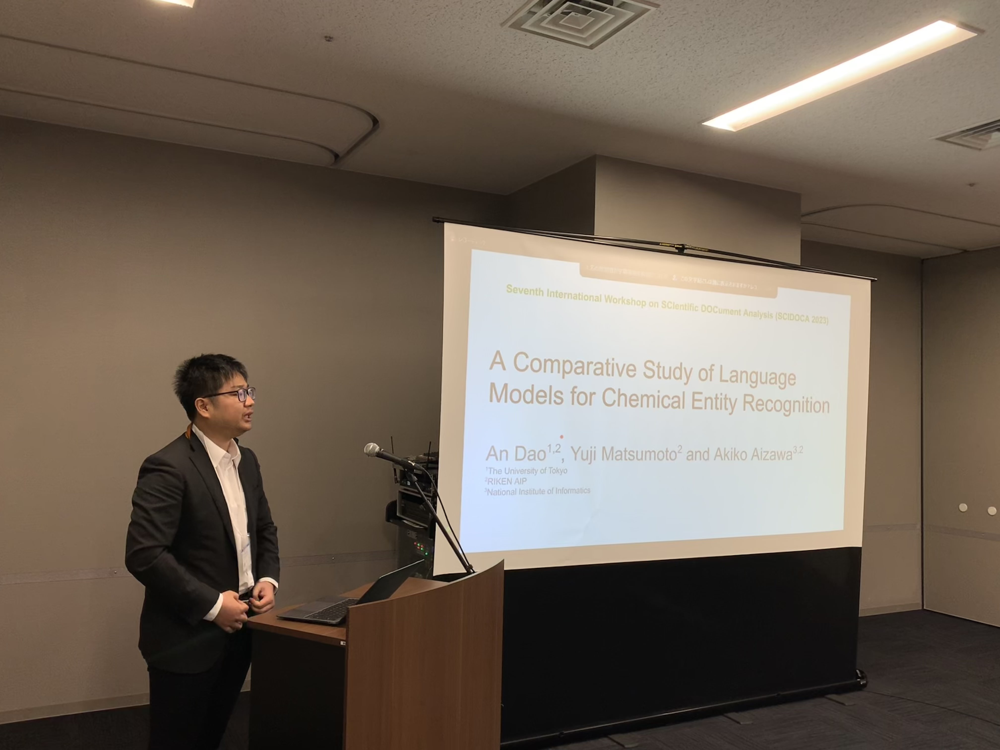
Mr. An Dao: A Comparative Study of Language Models for Chemical Entity Recognition
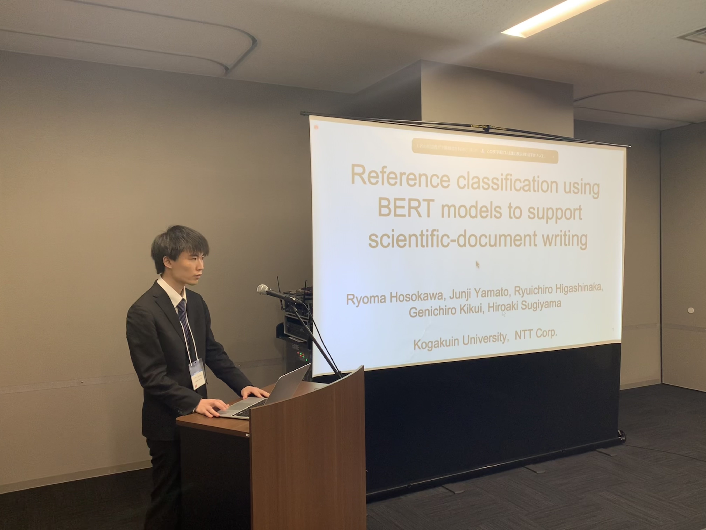
Mr. Ryoma Hosokawa: Reference classification using BERT models to support scientific-document writing
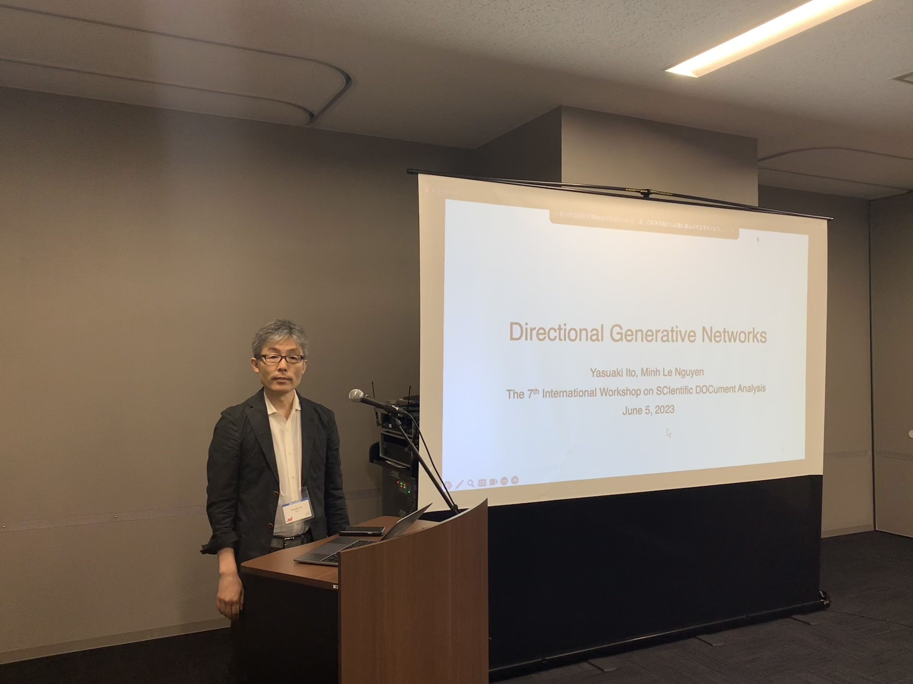
Mr. Yasuaki Ito: Directional Generative Networks
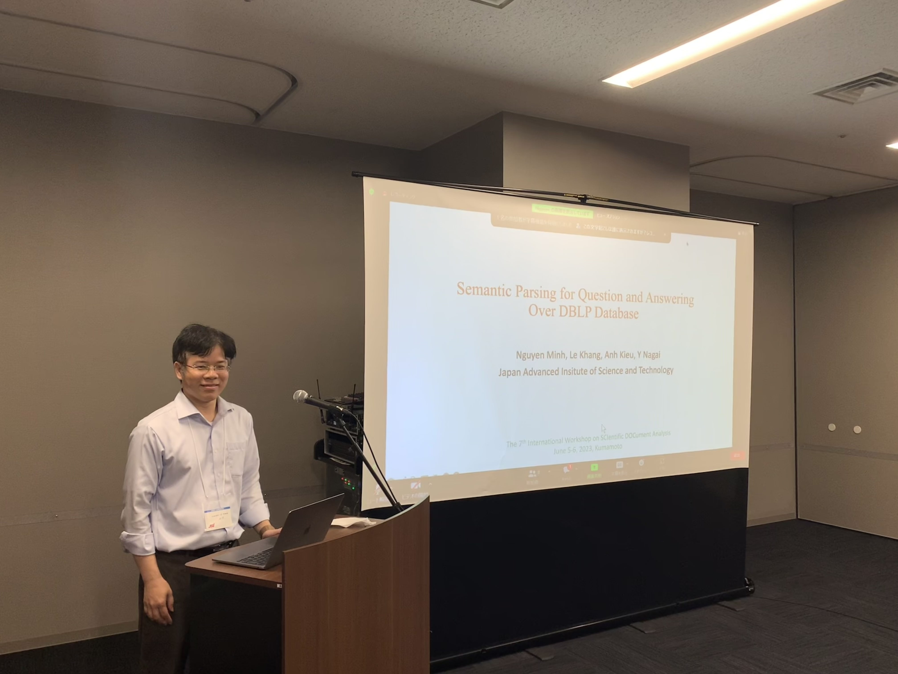
Prof. Minh Nguyen: Semantic Parsing for Questions and Answering Over DBLP Database
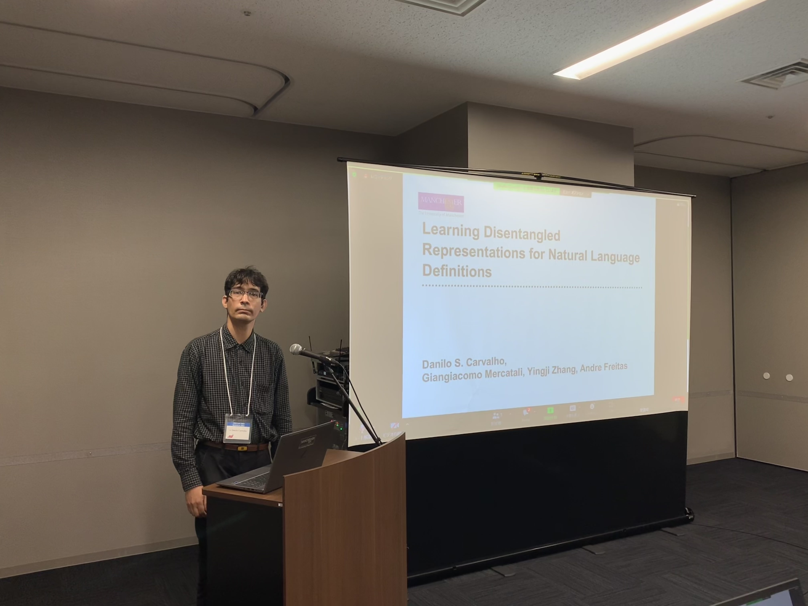
Invited talk 1 by Dr. Danilo Carvalho: Learning Disentangled Representations for Natural Language
Definitions
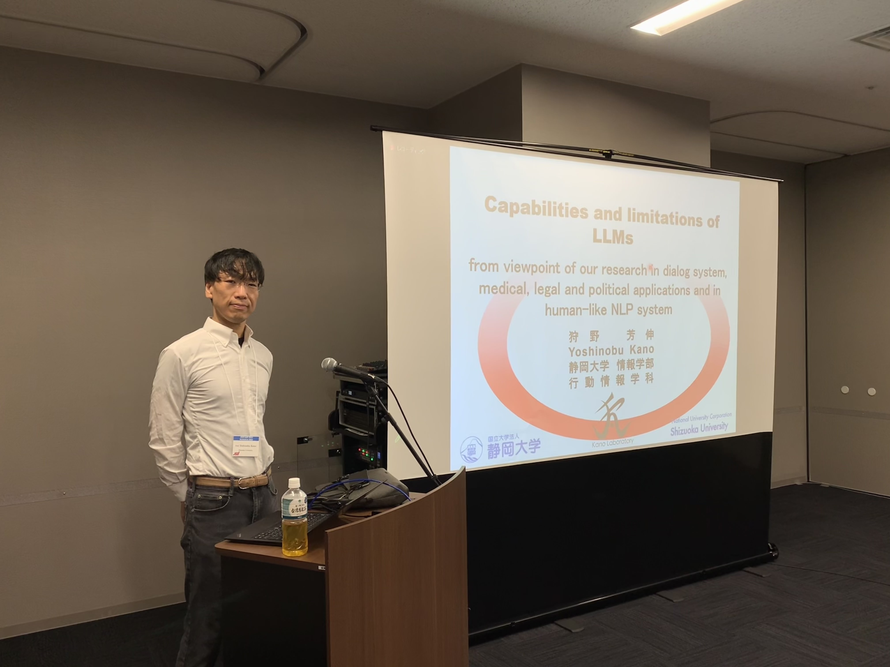
Invited talk 2 by Prof. Yoshinobu Kano: Capabilities and limitations of LLMs: from viewpoint of our
research in dialog system, medical, legal and political applications and in human-like NLP system
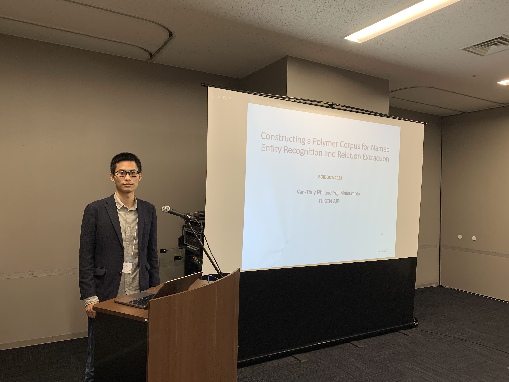
Mr. Van-Thuy Phi : Constructing a Polymer Corpus for Named Entity Recognition and Relation Extraction
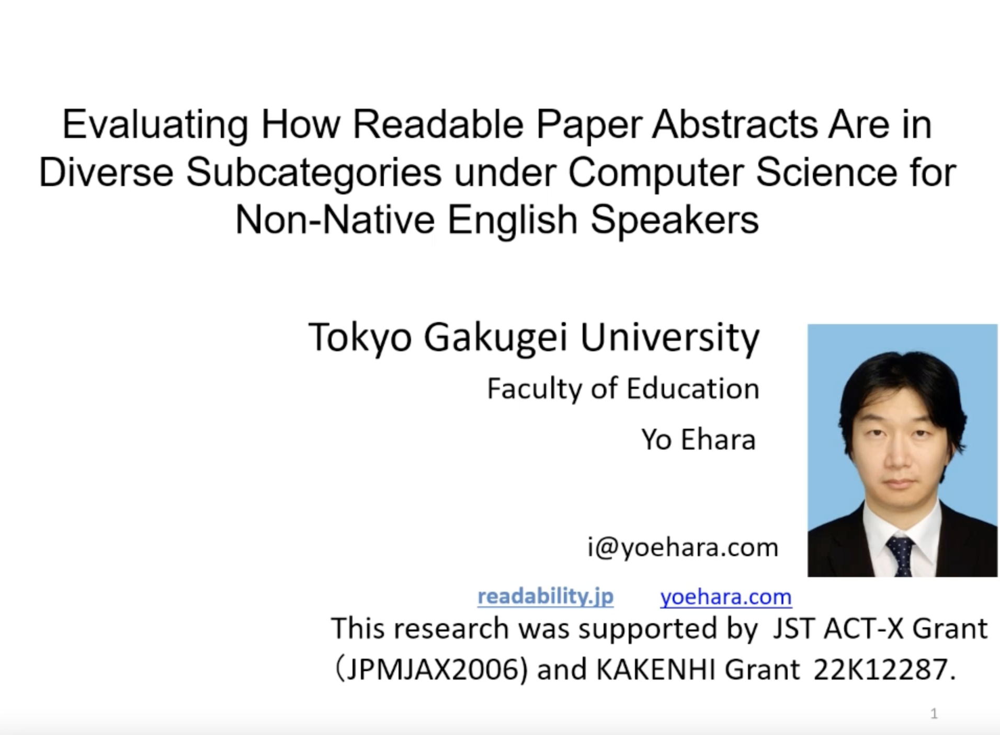
Dr. Yo Ehara: Evaluating How Readable Paper Abstracts Are in Diverse Subcategories under Computer
Science for Non-Native English Speakers
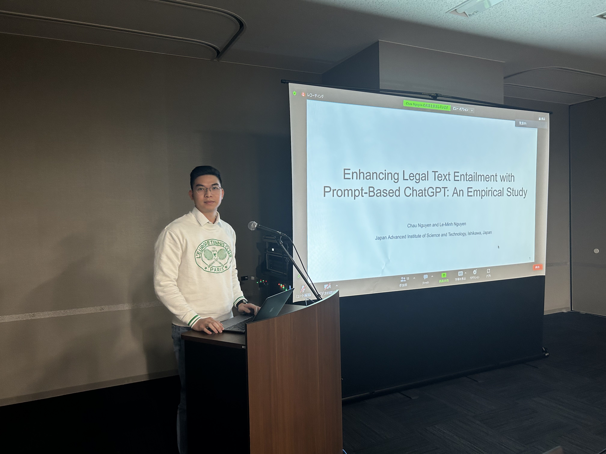
Mr. Chau Nguyen: Enhancing Legal Text Entailment with Prompt-Based ChatGPT: An Empirical Study
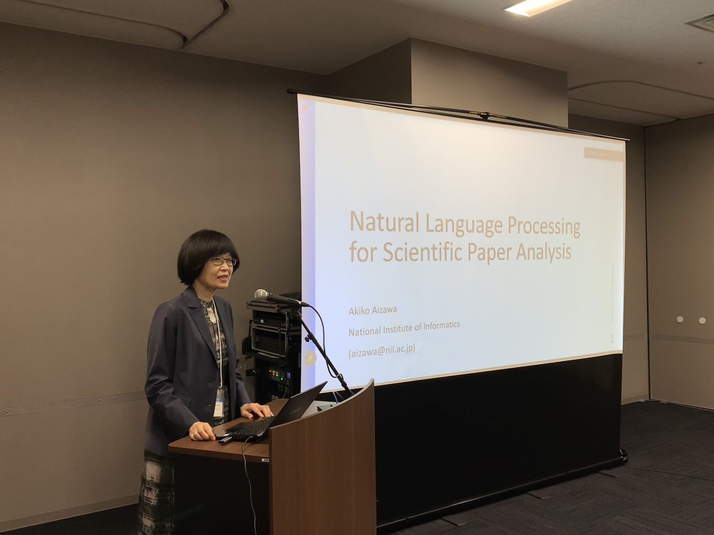
Invited talk 3 by Prof. Aiko Aizawa: Natural Language Processing for Scientific Paper Analysis
Aims and Scope
Recent proliferation of scientific papers and technical documents
has become an obstacle to efficient information acquisition of new
information in various fields. It is almost impossible for individual
researchers to check and read all related documents. Even retrieving
relevant documents is becoming harder and harder. This workshop
gathers all the researchers and experts who are aiming at scientific
document analysis from various perspectives, and invite technical
paper presentations and system demonstrations that cover any aspects
of scientific document analysis.
Important Dates (Time zone: AOE (Anywhere on Earth))
Submission Deadline for Long Papers: April 25, 2023
Submission Deadline for Short Papers: May 8, 2023
Notification of Acceptance (Long+Short Papers): May 15, 2023
Camera-Ready due (Long+Short Papers): May 20, 2023
Workshop Date: June 5 - 6, 2023
Registration
Please register the workshop at registration page
of JSAI International Symposia on AI 2023.
Program
Day 1 (June 5, 2023)
- 09:50-10:00: Opening
- 10:00-11:00: Session 1 (SC: Prof. Le-Minh Nguyen)
- 10:00-10:30: Towards Enhancing Information Extraction via Public Discussions on Reddit about
COVID-19 Research
Vu Tran, Tomoko Matsui and Minh Le Nguyen
- 10:30-11:00: A Comparative Study of Language Models for Chemical Entity Recognition
An Dao, Yuji Matsumoto and Akiko Aizawa
- 11:00-14:00: Lunch
- 14:00-15:30: Session 2 (SC: Dr. Vu Tran)
- 14:00-14:30: Reference classification using BERT models to support scientific-document writing
Ryoma Hosokawa, Junji Yamato, Ryuichiro Higashinaka, Genichiro Kikui and Hiroaki
Sugiyama
- 14:30-15:00: Directional Generative Networks
Yasuaki Ito and Le-Minh Nguyen
- 15:00-15:30: Semantic Parsing for Questions and Answering Over DBLP Database
Minh Nguyen, Khang Le, Anh Kieu and Y. Nagai
- 16:00-17:00: Invited talk 1 by Dr. Danilo Carvalho (SC: Dr. Vu Tran)
Title: Learning Disentangled
Representations for Natural Language Definitions
Abstract:
While large language models (LLMs) have been pushing the state-of-the-art in a variety of
Natural
Language Processing tasks, they have an important drawback, which is the difficulty in
interpreting their internal representations and controlling them. This fact raises practical and
ethical concerns about their use. To alleviate this problem, we propose a method for
incorporating
information about the role of each word in a dictionary definition towards the meaning of the
defined term. This promotes disentanglement of said roles in the internal representations of the
models, allowing better interpretation of their properties and a higher degree of control over
the
generated text.
Bio:
Danilo Carvalho is a Research Associate at the Department of Computer Science at the University
of
Manchester, working on Safe and Explainable Artificial Intelligence (XAI) architectures.
He holds a Ph.D. in Information Science from Japan Advanced Institute of Science and Technology
(JAIST), having worked as a systems analyst within Brazilian state oil company (Petrobras) on
job
safety analysis (JSA) and environmental licensing control systems, followed by several
scientific
and technological projects in the fields of Artificial Intelligence, Computational Linguistics
and
Information Systems, with applications to economics, legal informatics, media literacy and
healthcare. His other research interests include Parallel and Distributed Computing and Software
Engineering.
Day 2 (June 6, 2023)
- 10:00-12:00: Session 3 (SC: Prof. Le-Minh Nguyen)
- 10:00-11:00: Invited talk 2 by Prof. Yoshinobu Kano
Title: Capabilities and
limitations of LLMs: from viewpoint of our research in dialog
system, medical, legal and political applications and in human-like NLP system
Abstract:
Recent advantages of the LLMs (Large Language Models, such as ChatGPT) affect not only to the
NLP community but the global society of the oridinary people.
A question is that the LLMs could solve what sort of NLP problems, though it is still under
investigation. Another question is that to what extent the LLMs are "similar" to the humans --
they apparently differ in its architecture and the training data size.
I introduce a couple of related NLP projects that I organize, such as automatic medical
diagnosis, AIWolf project (dialog system in conversation games), Legal NLP (legal bar exam
solver), and SNS analysis project for public opinions, discuss the ability and limitations of
the LLMs with future directions.
Bio:
Yoshinobu Kano is an Associate Professor, a Faculty of Informatics in Shizuoka University,
Japan.
He received BS in physics (2001), MSc (2003) and PhD (2011) in information science and
technology from the University of Tokyo, respectively.
He was a research associate in University of Tokyo (2009), JST PRESTO researcher (2011), an
associate professor (PI) in Shizuoka Univerity (2014-).
He is interested in human-like natural language processing and its applications in medical,
legal, political and conversational issues. See
more here.
- 11:30-12:00: Constructing a Polymer Corpus for Named Entity Recognition and Relation Extraction
Van-Thuy Phi and Yuji Matsumoto
- 12:00-13:30: Lunch
- 13:30-14:30: Session 4 (SC: Dr. Vu Tran)
- 13:30-14:00: Evaluating How Readable Paper Abstracts Are in Diverse Subcategories under Computer
Science for Non-Native English Speakers
Yo Ehara
- 14:00-14:30: Enhancing Legal Text Entailment with Prompt-Based ChatGPT: An Empirical Study
Chau Nguyen and Le-Minh Nguyen
- 15:00-16:00: Invited talk 3 by Prof. Aiko Aizawa (SC: Prof. Yuji Matsumoto )
Title: Natural Language Processing
for Scientific Paper Analysis
Abstract:
The rapid development of recent language models has greatly improved the
performance of various natural language processing tasks such as
information extraction, summarization, or question answering.
This talk will present some of the recent techniques in various areas of
scientific text analysis to explore the challenges and future perspectives.
Bio:
Akiko AIZAWA is a professor at the National Institute of Informatics
(NII). Aizawa is also an adjunct professor at the University of Tokyo as
well as at the Graduate University of Advanced Studies. Aizawa's
research interests include natural language understanding, dialogue
systems, and scholarly document processing.
- 16:00-16:10: Closing
Topics
Relevant topics include, but are not limited to, the following:
- text analysis
- document structure analysis
- logical structure analysis
- figure and table analysis
- citation analysis of scientific and technical documents
- scientific information assimilation
- summarization and visualization
- knowledge discovery/mining from scientific papers and data
- similar document retrieval
- entity and relation linking between documents and knowledge base
- survey generation
- resources for scientific documents analysis
- document understanding in general
- NLP systems aiming for scientific documents including tagging, parsing, coreference, etc.
Submissions
There are two classes of submissions:
- Long paper on original and completed work, including concrete evaluation and analysis wherever
appropriate; and
- Short paper on a small, focused contribution, work in progress, a negative result, or an opinion
piece.
The page limits are up to 14 pages including references for the longer papers, and up to 7 pages
including references for the short papers. (Reviewers will be told that there is no penalty for writing
a shorter submission.)
All submissions should be written in English, formatted according to the Springer Verlag LNCS style in
a pdf form, which can be obtained from here. The paper should be
anonymized. If you use a word file, please follow the instruction of the format, and then convert
it into a pdf form and submit it at the paper submission page.
For both classes, in addition to the original unpublished work, we also accept the papers that have
already been published or presented in other venues. This submission should also be anonymized, and will
be reviewed by the program committee.
The accepted papers will not be archived in general.
The papers are distributed to the participants of the workshop on a USB flash drive. If the authors hope
to make their paper publicly available, we also will provide a link to the pdf on this webpage.
Otherwise, we do not upload the papers on the web.
Unpublished submissions on both long and short paper tracks are considered as the candidates for
post-proceedings of LNAI (the authors can also reject the invitation, if they wish). The papers will be
archived only by this post-proceedings.
You can submit your paper at
https://easychair.org/conferences/?conf=scidoca2023 .
If you cannot submit a paper by EasyChair System by some trouble,
please send email to "nguyenml[at]jaist.ac.jp"
If a paper is accepted, at least one author of the paper must register
the workshop and present it. Please register the workshop at registration page.
Post Proceedings
Selected papers will be published as a post-proceedings via Springer Verlag "Lecture Notes in Artificial
Intelligence" series after the second round of review after the workshop.
Workshop Chairs
Minh Le Nguyen, Japan Advanced Institute of Science and Technology
Yuji Matsumoto, RIKEN Center for Advanced Intelligence Project (Advisor)
Program Committee Members
Nguyen Le Minh, Japan Advanced Institute of Science and Technology
Noriki Nishida, RIKEN Center for Advanced Intelligence Project
Vu Tran, The Institute of Statistical Mathematics
Yusuke Miyao, The University of Tokyo
Yuji Matsumoto, RIKEN Center for Advanced Intelligence Project
Yoshinobu Kano, Shizuoka University
Akiko Aizawa, National Institute of Informatics
Ken Satoh, National Institute of Informatics and Sokendai
Junichiro Mori, The University of Tokyo
Kentaro Inui, Tohoku University
Nguyen Ha Thanh, National Institute of Informatics
Nguyen Minh Phuong, Japan Advanced Institute of Science and Technology
For any inquiry concerning the workshop, please send it to "nguyenml[at]jaist.ac.jp"
Preivous SCIDOCA workshops
Back To Top